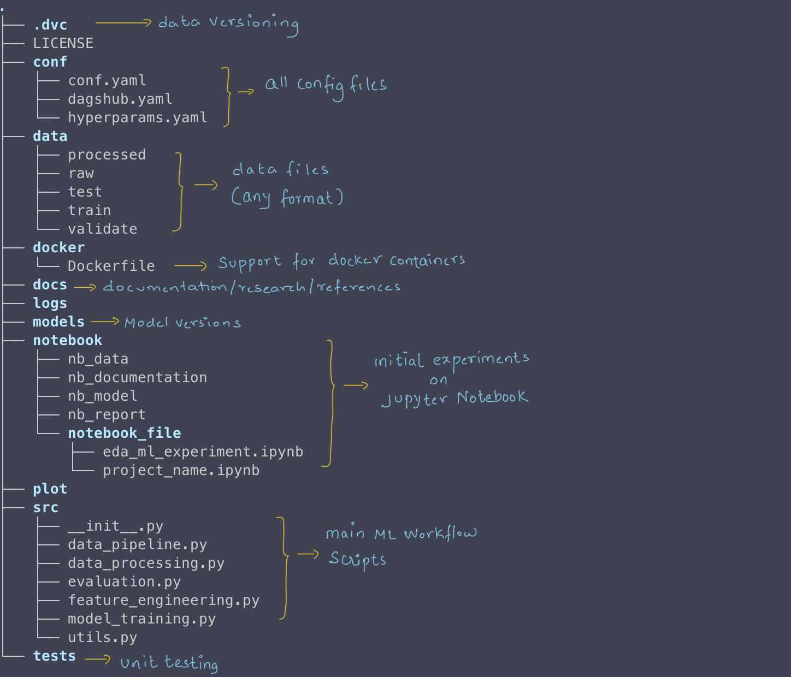

Introduction
I go by one simple principle…
If you repeat the same steps twice, then automate it the third time.
Couple of years back, I wrote blog on how to :
1> Structure your Data Science and ML project - Link here
2> Automating ML structure using Make and a simple Python Script - Link here.
In this follow-up article, I will provide an update to the cookie-cutter project which now uses yaml making it far more flexible and easy to use.
Project Structure
Here’s the structure I use for all my ML projects.
You can create a different one but these are pretty standard for most of the projects.

YAML
YAML is a text based data serialization language for managing your configuration files. YAML stands for Yet Another Markup Language or YAML ain't markup language. You can read more about it here.
Here’s the YAML format used in my project.
# support for data version control
- .dvc:
# if you plan to use docker container
- docker:
- Dockerfile
# basic ML development files
- src:
- __init__.py
- data_pipeline.py
- data_processing.py
####Script
One of the main pre-requisites for this script is pyyaml. You can find the documentation here. Install them via pip.
Argparse
Everything starts with the main function. It uses argparse to parse command line arguments provided to the script. It then loads the yaml config file.
# parse the arguments provided on the command line
args = parse_args()
# Load yaml config
config = load_config()The parser will look for specific flags and take action. More about that in the Help section below.
parser.add_argument("--n", "--name", #...)
parser.add_argument("--p", "--path", #...)
parser.add_argument("--c", "--config", #...)
parser.add_argument("--v", "--venv", #...)File and Directories
Based on how YAML is structured, the script will create files, directories and sub-directories via a function create_directories
def create_directories(project_path, config):
if isinstance(config, str):
item_path = os.path.join(project_path, config)
with open(item_path, "w"):
pass # empty file
#...Virtual env
If you provide flag to create a virtual environment, the script will create one for you. There is a function called create_virtual_env to do exactly that.
def create_virtual_env(project_path, activate=True):
#...
if not os.path.exists(venv_path):
venv.create(venv_path, with_pip=True)
#...Help
When you use -h flag, it will show you how to use the script.
If you want to give a specific name to your project use --n or N flag. If not, it will create a default directory called ml-cookie-cutter.
Specify the path where the project needs to be created using --p or P flag.
Finally, if you want the script to create a virtual environment for you, go ahead and use the --v or --venv flag. By default, the name of the environment is venv.
$> python3 main.py --h
# usage: ML Cookie Cutter [-h] [--n N] [--p P] [--c C] [--v]
# Creates ML project cookie cutter structure
#optional arguments:
# -h, --help show this help message and exit
# --n N, --name N Name of the directory to be created, default = ml-cookie-cutter
# --p P, --path P provide the path where, default is $HOME dir
# --v, --venv create a virtual env. [ignore if you are already on a virtual env]
# Enjoy and happy codingFinal step
Once you have the virtual environment set up, you can activate it as shown below. You should see that it in your command prompt; go ahead and start installing all your Data science and ML libraries.
For deactivating simply type deactivate
# go to the project folder
$> cd ml-cookie-cutter
# activate the environment
$> source venv/bin/activate
# venv is activated
(venv) $> pip install numpy pandas pytorch seaborn notebook
# To deactive use the following command
(venv) $> deactivate
$>On windows if you use PowerShell activate using Activate.ps1
Conclusion
This article shows how you can use this cookie-cutter project and create a ML structure with a simple command-line tool. Enjoy and have fun learning!
This is how I have used the cookie-cutter project to create a ML structure with a simple command-line tool. Enjoy and have fun learning!
Happy coding!
References
How to structure your ML projects